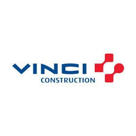
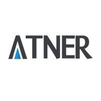
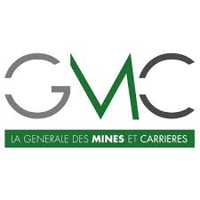
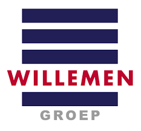
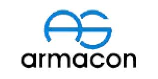
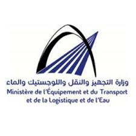

Hassan Ahlal
Responsable des Travaux Topographiques
Géomètre-topographe expérimenté avec plus de 7 ans d'expertise dans les travaux publics, le génie civil et l'aménagement du territoire. Titulaire d'un Diplôme en Topographie, j'ai développé une solide maîtrise des levés topographiques, de l'implantation d'ouvrages complexes et du contrôle des plans d'exécution.
Mon parcours m'a permis d'évoluer de technicien topographe à responsable des travaux topographiques, en assurant la coordination d'équipes sur des chantiers de grande envergure. J'ai approfondi l'utilisation des instruments de pointe (station totale, GPS RTK, scanners 3D) et le traitement des données avec les logiciels spécialisés.
Spécialisé dans la gestion de projets de construction, je garantis la précision métrique des implantations et le respect strict des normes techniques. Mon approche combine rigueur technique, anticipation des contraintes terrain et collaboration étroite avec les ingénieurs et conducteurs de travaux pour assurer la réussite des projets.
Mes Services
Levés Topographiques
Levés de précision pour tous types de projets
- Topographie classique : Nivellement, polygonation, implantation
- Géoréférencement : Coordonnées précises avec GPS RTK
- Plans de situation : Plans topographiques détaillés
- Relevés altimétriques : Courbes de niveau, profils en long et en travers
Implantation de Chantier
Implantation précise des ouvrages et infrastructures
- Implantation d'ouvrages : Bâtiments, routes, ponts, réseaux
- Calage altimétrique : Nivellement de précision
- Réglage de machines : Guidage de pelles, bulldozers, finisseurs
- Contrôle géométrique : Vérification des implantations
Suivi et Contrôle des Travaux
Suivi en temps réel et contrôle qualité des travaux
- Contrôle d'exécution : Vérification conforme aux plans Métrologie : Mesures de déformation et tassement
- Réception des travaux : Vérifications finales
- Reporting : Rapports techniques détaillés
Études Techniques
Études préalables et assistance technique
- Avant-projets : Études de faisabilité topographique
- Métrés : Calculs de cubatures et de surfaces
- Plans d'exécution : Réalisation et vérification
- Expertises : Constatations et diagnostics
Formation & Conseil
Transmission de compétences techniques
- Formation terrain : Utilisation d'équipements topographiques
- Conseil technique : Optimisation des processus topographiques
- Assistance logicielle : Formation aux logiciels spécialisés
- Normes et réglementations : Mise à jour des pratiques
Management d'Équipe
Encadrement et coordination d'équipes topographiques
- Gestion d'équipe : Planning, répartition des tâches
- Coordination chantier : Interface avec les autres corps de métier
- Optimisation des ressources : Matériel et personnel
- Sécurité : Respect des règles de sécurité sur chantier
Expériences Professionnelles

Responsable des Travaux Topographiques
VINCI Construction
Encadrement et coordination des équipes topographiques sur des projets de grande envergure. Responsable de la qualité des levés et implantations.
- Management d'une équipe de 5 topographes
- Supervision des levés topographiques pour projets routiers
- Contrôle qualité des implantations d'ouvrages d'art
- Interface technique avec les ingénieurs projet
- Optimisation des processus topographiques

Technicien Géomètre Topographe
ATNER
Réalisation de levés topographiques pour projets d'aménagement urbain et infrastructures. Participation à des projets de voirie et réseaux divers.
- Levés topographiques pour réseaux AEP et assainissement
- Implantation de voiries et espaces publics
- Calculs de cubatures pour terrassements
- Réalisation de plans de situation détaillés

Technicien Géomètre Topographe Projeteur
LA GENERALE DES MINES ET CARRIERES
Topographie minière et carrières. Levés pour exploitation de ressources minérales et suivi des excavations.
- Levés de carrières et mines à ciel ouvert
- Calculs de réserves et cubatures
- Suivi des fronts de taille
- Établissement de profils d'exploitation

Technicien Géomètre Topographe
Willemen Groep
Travaux topographiques pour projets de construction. Participation à des chantiers de bâtiment et génie civil.
- Implantation de bâtiments et infrastructures
- Contrôle des plans d'exécution
- Relevés de façades et structures existantes
- Assistance au métreur
Technicien Géomètre Topographe Projeteur
KYMG TRAVAUX
Topographie pour travaux publics et aménagements urbains. Polyvalence sur différents types de projets.
- Projets de voirie et réseaux divers
- Aménagements urbains et espaces verts
- Plans topographiques pour études préalables
- Métrés et estimations quantitatives

Technicien Géomètre Topographe
ARMACON INGENIERIE
Bureau d'études techniques. Réalisation de plans topographiques et assistance aux ingénieurs.
- Levés topographiques pour études techniques
- Réalisation de plans d'exécution
- Assistance aux ingénieurs d'études
- Numérisation et mise en plan

Stage Technician
DIRECTION PROVINCIALE DE L'ÉQUIPEMENT D'EL JADIDA
Stage de fin d'études. Initiation aux missions topographiques dans le secteur public.
- Participation à des levés pour projets publics
- Assistance aux géomètres experts
- Découverte des procédures administratives
- Réalisation de rapports techniques
Contactez-moi
Collaborons ensemble
Je suis disponible pour discuter de vos projets de topographie, répondre à vos questions techniques ou explorer de nouvelles opportunités professionnelles.
Message envoyé avec succès!
Merci pour votre message. Je vous répondrai dans les plus brefs délais.